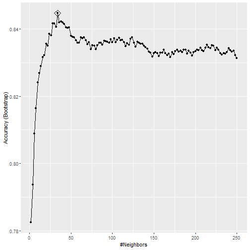

Visualization with `ggplot2`
Adam J Sullivan
Assistant Professor of Biostatistics
Brown University
ggplot2
Appropriate graphical analysis may make the conclusions so clearcut that detailed specific analysis is unnecessary
-- David Cox (1978)
ggplot2
- We will begin our journey into statistical graphics with the package
ggplot2. - This is a package by Hadley Wickham and is part of the tidyverse.
- It is a very comprehensive and easily adaptable language of graphics.
What can't ggplot2 do?
- A good place to start might be with what
ggplot2cannot do:- 3d graphs.
- Interactive graphs, use
ggvis - DAGs, see
igraph
- We will now focus on all the things it can do.
ggplot2 components
ggplot2is built off the grammar of graphics with a very intuitive structure.- The base graphics built into R require the use of many different functions and each of them seem to have their own method for how to use them.
ggplot2will be more fluid and the more you learn about it the more amazing of graphics you can create.
ggplot2 components
- We will get started with the components of every
ggplot2object:- data
- aesthetic mappings between variables in the data and visual properties.
- At least one layer which describes how to render the data.
- Many of these are with the
geom_foo()function.
Our Data
- We will be working with data from fivethirtyeight
- We can access this by installing the package in R:
install.packages("fivethiryeight")
library(fivethirtyeight)
Our Data
- We will work with data from the article: Comic Books Are Still Made By Men, For Men And About Men
- We can access this data by calling the following:
comic_characters
Comic Characters Data
## # A tibble: 23,272 x 16
## publisher page_id name urlslug id align eye hair sex gsm
## <chr> <int> <chr> <chr> <chr> <ord> <chr> <chr> <chr> <chr>
## 1 Marvel 1678 Spid~ "\\/Sp~ Secr~ Good~ Haze~ Brow~ Male~ <NA>
## 2 Marvel 7139 Capt~ "\\/Ca~ Publ~ Good~ Blue~ Whit~ Male~ <NA>
## 3 Marvel 64786 "Wol~ "\\/Wo~ Publ~ <NA> Blue~ Blac~ Male~ <NA>
## 4 Marvel 1868 "Iro~ "\\/Ir~ Publ~ Good~ Blue~ Blac~ Male~ <NA>
## 5 Marvel 2460 Thor~ "\\/Th~ No D~ Good~ Blue~ Blon~ Male~ <NA>
## 6 Marvel 2458 Benj~ "\\/Be~ Publ~ Good~ Blue~ No H~ Male~ <NA>
## 7 Marvel 2166 Reed~ "\\/Re~ Publ~ Good~ Brow~ Brow~ Male~ <NA>
## 8 Marvel 1833 Hulk~ "\\/Hu~ Publ~ Good~ Brow~ Brow~ Male~ <NA>
## 9 Marvel 29481 Scot~ "\\/Sc~ Publ~ <NA> Brow~ Brow~ Male~ <NA>
## 10 Marvel 1837 Jona~ "\\/Jo~ Publ~ Good~ Blue~ Blon~ Male~ <NA>
## # ... with 23,262 more rows, and 6 more variables: alive <chr>,
## # appearances <int>, first_appearance <chr>, month <chr>, year <int>,
## # date <date>
Comic Characters Data
- We can see the names of the variables by using the
names()function:
names(comic_characters)
## [1] "publisher" "page_id" "name"
## [4] "urlslug" "id" "align"
## [7] "eye" "hair" "sex"
## [10] "gsm" "alive" "appearances"
## [13] "first_appearance" "month" "year"
## [16] "date"
ggplot() Basics
- We will begin with a basic graph of appearances by alignment
library(ggplot2)
ggplot(data=comic_characters, aes(x=align, y=appearances))
ggplot() Basics

ggplot() Statement
- We can see that all we have is the basic layout of axis.
- The data and aes gives us the basic layout.
- We need
geom_foo()to make a proper graph.
geom_point() Statement
- We can add
geom_point()to this:
ggplot(data=comic_characters, aes(x=align, y=appearances)) +
geom_point()
geom_point() Statement

Other graphs
- This graph is not the best use for out data.
- We could try boxplots instead:
ggplot(data=comic_characters, aes(x=align, y=appearances)) +
geom_boxplot()
Other graphs

Quick Transformation
- We may be having a hard time seeing this due to the outliers in the data.
- We can try a log transform.
- The code below will do this
- By the end of today you will understand this code
comic_characters <- comic_characters %>%
mutate(log_app = log(appearances))
Boxplots Again

Bar Graphs
- We could then consider simple bar graphs
- For example if we wanted to know how many characters of each type there were:
ggplot(data=comic_characters, aes(x=align)) +
geom_bar()
- Note: With bar graphs we only need the x-axis.
Bar Graphs

Basic Template
ggplot(data= <DATA>, aes(x=<X-VARIABLE>, y=<Y-VARIABLE>)) +
<GEOM_FUNCTION>()
Aesthetics
Aesthetics
- The basic aesthetics are mapping the data to the x and y axis.
- We can also add:
alpha: makes points transparent to see overlaps betterfill: Fills objects with colorcolor: Changes color of points or lines.shape: Changes spape of points
Aesthetics: alpha
ggplot(data=comic_characters, aes(x=align, y=log_app)) +
geom_point(aes(alpha=1/100))
Aesthetics: alpha

Aesthetics: alpha
- It can be hard to see the transparency when they are so close.
- We can set the transparency to a variable
YOUR TURN
- Set
alpha=year - How does this change things?
Aesthetics: alpha

Aesthetics: color
- We can easily change the color of points and lines using
color
ggplot(data=comic_characters, aes(x=align, y=log_app)) +
geom_point(aes(color=publisher))
Aesthetics: color

YOUR TURN
- Set
color="blue" - How does this change things?
Aesthetics: shapes
- We can change the shape of points based on different variables.
ggplot(data=comic_characters, aes(x=align, y=log_app)) +
geom_point(aes(shape=publisher))
Aesthetics: shapes

Your Turn
- Try using both shape and color.
- How does this add dimensionality to the graph?
Aesthetics: fill
- We can fill objects with color as well
ggplot(data=comic_characters, aes(x=align)) +
geom_bar(aes(fill="blue"))
Aesthetics: fill
- This doesnt have the same effect as
color

Aesthetics: fill
- We can use other variables to add dimensionality
ggplot(data=comic_characters, aes(x=align)) +
geom_bar(aes(fill=publisher))
Aesthetics: fill

Geoms
Geoms
- There are many
geom_foo()functions we can use. - The Cheatsheet on
ggplot()is a good place to start for more.
Other Plots: Density

Other Plots: Density

Other Plots: Histogram

Piping or Chaining Data
Piping or Chaining
- We will discuss a concept that will help us greatly when it comes to working with our data.
- The usual way to perform multiple operations in one line is by nesting.
Piping or Chaining
To consider an example we will look at the data provided in the gapminder package:
library(gapminder)
head(gapminder)
## # A tibble: 6 x 6
## country continent year lifeExp pop gdpPercap
## <fct> <fct> <int> <dbl> <int> <dbl>
## 1 Afghanistan Asia 1952 28.8 8425333 779.
## 2 Afghanistan Asia 1957 30.3 9240934 821.
## 3 Afghanistan Asia 1962 32.0 10267083 853.
## 4 Afghanistan Asia 1967 34.0 11537966 836.
## 5 Afghanistan Asia 1972 36.1 13079460 740.
## 6 Afghanistan Asia 1977 38.4 14880372 786.
Nesting vs Chaining
- Let's say that we want to have the GDP per capita and life expectancy Kenya.
- Traditionally speaking we could do this in a nested manner:
filter(select(gapminder, country, lifeExp, gdpPercap), country=="Kenya")
Nesting vs Chaining
- It is not easy to see exactly what this code was doing but we can write this in a manner that follows our logic much better.
- The code below represents how to do this with chaining.
gapminder %>%
select(country, lifeExp, gdpPercap) %>%
filter(country=="Kenya")
Breaking Down the Code
- We now have something that is much clearer to read.
- Here is what our chaining command says:
- Take the
gapminderdata - Select the variables:
country,lifeExpandgdpPercap. - Only keep information from Kenya.
- Take the
- The nested code says the same thing but it is hard to see what is going on if you have not been coding for very long.
Breaking Down the Code
- The result of this search is below:
# A tibble: 12 x 3
country lifeExp gdpPercap
<fctr> <dbl> <dbl>
1 Kenya 42.270 853.5409
2 Kenya 44.686 944.4383
3 Kenya 47.949 896.9664
4 Kenya 50.654 1056.7365
5 Kenya 53.559 1222.3600
6 Kenya 56.155 1267.6132
7 Kenya 58.766 1348.2258
8 Kenya 59.339 1361.9369
9 Kenya 59.285 1341.9217
10 Kenya 54.407 1360.4850
11 Kenya 50.992 1287.5147
12 Kenya 54.110 1463.2493
What is %>%
- In the previous code we saw that we used
%>%in the command you can think of this as saying then. - For example:
gapminder %>%
select(country, lifeExp, gdpPercap) %>%
filter(country=="Kenya")
What Does this Mean?
- This translates to:
- Take Gapminder then select these columns select(country, lifeExp, gdpPercap) then filter out so we only keep Kenya
Why Chain?
- We still might ask why we would want to do this.
- Chaining increases readability significantly when there are many commands.
- With many packages we can replace the need to perform nested arguments.
- The chaining operator is automatically imported from the magrittr package.
User Defined Function
- Let's say that we wish to find the Euclidean distance between two vectors say,
x1andx2. - We could use the math formula:
\[\sqrt{\sum(x_1-x_2)^2}\]
User Defined Function
- In the nested manner this would be:
x1 <- 1:5; x2 <- 2:6
sqrt(sum((x1-x2)^2))
User Defined Function
- However, if we chain this we can see how we would perform this mathematically.
# chaining method
(x1-x2)^2 %>% sum() %>% sqrt()
- If we did it by hand we would perform elementwise subtraction of
x2fromx1then we would sum those elementwise values then we would take the square root of the sum.
User Defined Function
# chaining method
(x1-x2)^2 %>% sum() %>% sqrt()
## [1] 2.236068
- Many of us have been performing calculations by this type of method for years, so that chaining really is more natural for us.